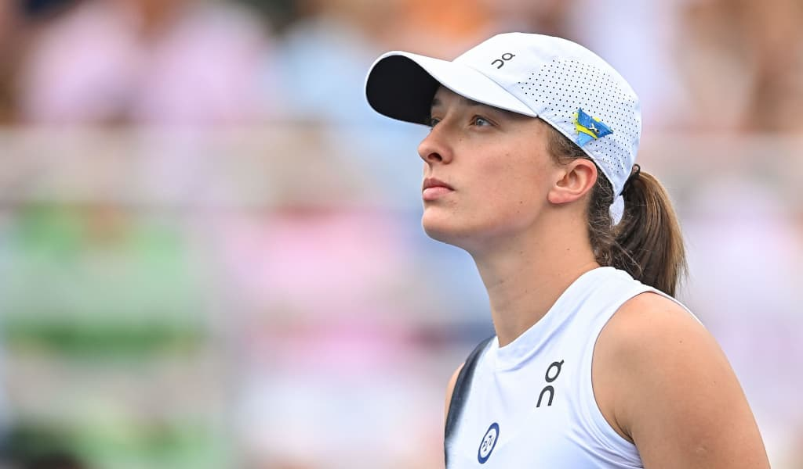
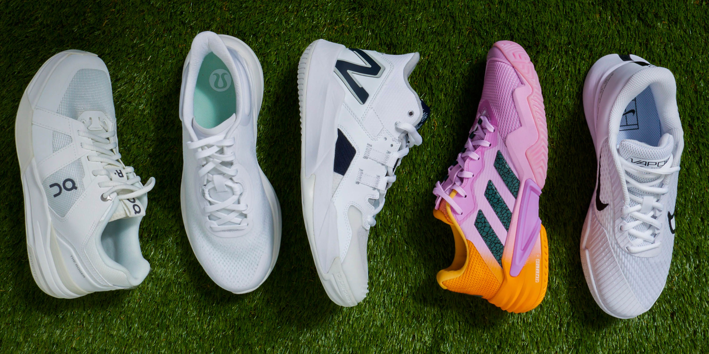

Tennis equipment is a crucial component of successful gameplay. Properly chosen gear can improve your performance, prevent injuries, and enhance comfort.
Discover the essential gear to elevate your game.
Tennis equipment is a crucial component of successful gameplay. Properly chosen gear can improve your performance, prevent injuries, and enhance comfort.
The technology behind racket manufacturing is evolving rapidly. For many years, graphite has been the primary material used to create this essential tool. While some manufacturers incorporate additional materials into their models, graphite remains the core component. However, the cheapest models are typically made of aluminum. I strongly advise against skimping and recommend opting for a graphite racket. A ball hit with a graphite racket travels faster, reduces joint strain, and provides significantly more comfort compared to an aluminum one.
Choosing the right tennis racket is a responsible process that will influence not only the quality of your game but also your health. Therefore, it is essential to select sports equipment carefully, considering your individual characteristics.
The heavier the racket, the stronger the ball will travel. For this reason, professionals generally use heavy rackets, often additionally weighted with special loads. For amateurs, medium-weight rackets are suitable as they are more maneuverable and comfortable.
Professionals often use rackets with a balance shifted toward the handle, typically marked "HL" or "headlight."
Amateurs may find neutral balance rackets more suitable, indicated by "even" on the parameters.
Smaller heads provide greater precision, while larger heads offer more power. Professionals might use rackets with heads as small as 95 square inches or less. For amateurs, 100–110 square inches is recommended, as these rackets have a larger "sweet spot," meaning hitting slightly off-center won't significantly impact comfort or accuracy.
This is a personal preference. Players focusing on precision and feel often prefer rackets with narrower frames, while those relying on powerful shots and spins typically choose wider frames. Amateurs are advised to opt for wider frames as they are more forgiving and less dependent on perfect technique.
Currently, most players, both amateurs and professionals, use synthetic multifilament strings. These strings are practical and come in affordable models. In addition to standard strings, there are ribbed-profile strings that theoretically allow for better spin on the ball.
When choosing strings, pay attention to their diameter:
For amateurs, I recommend soft strings with a medium diameter of about 1.25 mm.
Another crucial aspect is the string tension:
Professionals often experiment with string tension, but for amateurs, I recommend setting the tension within 23–25 kilograms.
Often, horizontal strings are strung with 1–2 kilograms less tension than vertical ones. When you hand your racket to a stringer, don’t forget to specify the exact tension for both vertical and horizontal strings (e.g., 25x24 kg).
String pattern (string density) indicates the number of horizontal and vertical strings in the racket. For amateurs, rackets with relatively low string density are recommended, as they generate more power and are easier to spin.
Grip size is measured in either units (0 to 5, where 0 is the smallest and 5 is the largest) or inches. Most men prefer a size 3 grip, while women often choose size 2. The grip should almost completely fill your hand when you wrap it around the handle. If unsure, choose a smaller size as you can always add an overgrip to increase the size.
When sold, a racket comes with a base grip on the handle, typically made of synthetic materials or, less commonly, leather. On top of the base grip, players usually wrap an additional grip, called an overgrip.
Overgrips, like strings, are consumable items. Once they become slippery or dirty, you can easily remove and replace them.
Overgrips generally come in two types:
Choosing a grip is a matter of personal preference. Try both types to determine which suits you best.
Some players prefer using dampeners, while others play without them, arguing that they slightly muffle the feel of the racket. Experiment with and without a vibration dampener to decide what feels more comfortable for you.
The selection of tennis balls is vast. There are balls specifically designed for particular types of courts:
Bounce characteristics vary significantly depending on the surface:
To maximize your playing comfort, choose balls suited for the surface you’re playing on or choose universal balls.
Another important parameter is internal pressure:
I recommend using pressurized balls as they generally offer a better playing experience.
We’ve covered rackets and their accessories. Choosing the right racket is an individual process. rush your decision, and avoid buying a racket just because your favorite player uses it. Instead, select a racket based on your skill level, body type, and personal preferences, while keeping the tips from this video in mind.
Many clubs offer racket testing services. Try out several models, play with them, and you’ll surely find the one that brings you joy and helps you earn winning points.
Let’s look at the specific features of selecting apparel and footwear for our sport. Of course, both clothing and shoes should look great and be to your liking, but that shouldn't be the only criterion for selection. Clothing and shoes must be comfortable, functional, and suitable for the environmental conditions.
Tennis attire typically consists of:
Accessories include caps, visors, headbands, wristbands, as well as socks and tennis shoes.
When purchasing tennis apparel, I recommend choosing synthetic materials, with the exception of socks. Modern, high-tech synthetic fabrics are lightweight, effectively wick moisture away, and are durable.
Clothing should not restrict your movement. When trying on apparel, perform various movements to see how freely you can move.
In hot, sunny weather, make sure to have a cap to protect yourself from potential heatstroke and to shield your eyes from the sun.
When choosing tennis shoes, follow these guidelines:
Tennis shoes are specialized footwear.
Ensure proper fit.
Match the shoes to the court surface. Selecting shoes designed for the surface you play on will improve your confidence during movement and extend the lifespan of your shoes since wear and tear vary by surface type.